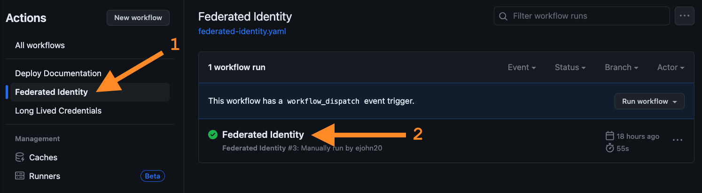
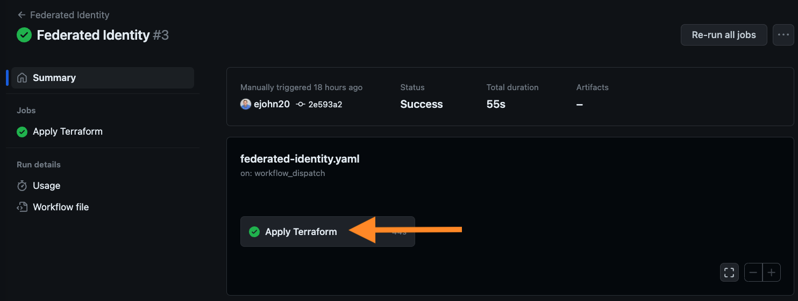
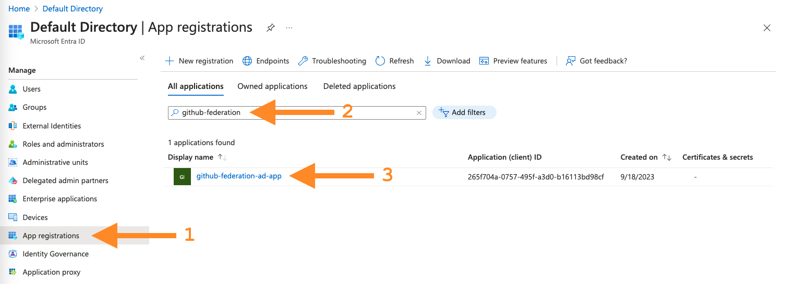
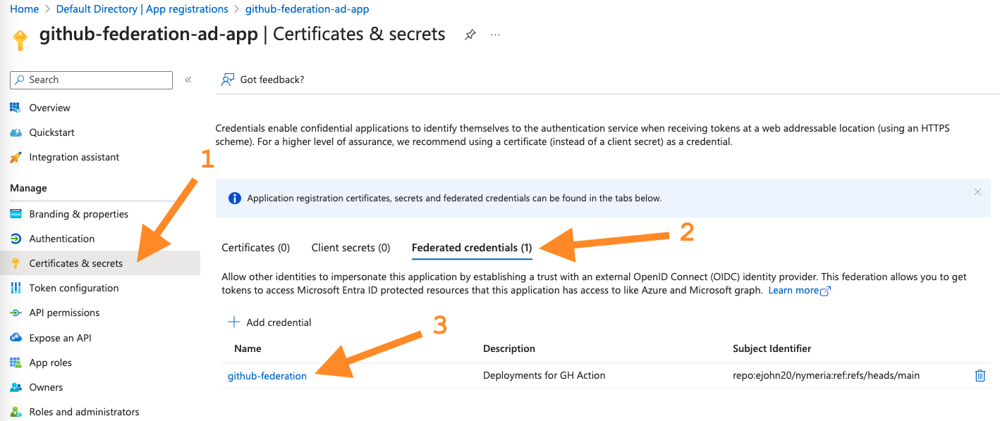
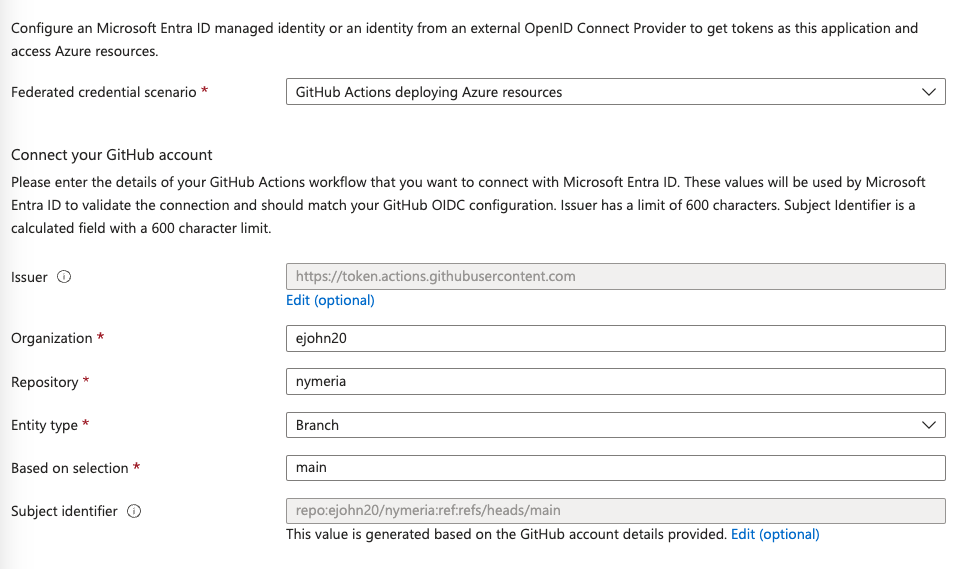

Azure Identity Federation
During the Getting Started section, you deployed the Federated Identity GitHub Action. Without realizing it, you used Azure's workload identity federation capability to deploy the Nymeria virtual machine to your Azure subscription. In this section, we will explore how the GitHub Action uses Azure's workload identity federation capability to authenticate to the Azure API.
GitHub Action Federation
Inspect the GitHub Federated Identity workflow and identify the OIDC token's subject, issuer, and audience claims.
-
In your GitHub repository, navigate to the Actions tab and click on the Federated Identity workflow. Then, select the completed Federated Identity run to view the completed jobs.

-
Select the Apply Terraform job to view the steps.

-
Expand the Azure Login step to view the log output from the the
azure/loginaction. Observe the following log output from theazure/loginaction showing the federated token details.-
The identity token's issuer is set to
https://token.actions.githubusercontent.com. -
The identity token's subject uniquely identifies your
nymeriarepository andmainbranch running the Federated Identity workflow.
-
-
Expand the
azure/loginactionrundetails to view the action's inputs variables. Theazure/loginaction uses theclient-id,tenant-id, andsubscription-idparameters to authenticate to the Azure API. Theaudienceparameter is used when requesting an OpenID Connect (OIDC) identity token from the GitHub Actions OpenID Connect Identity Provider. Theaudienceparameter uses the default valueapi://AzureADTokenExchangefrom theazure/loginaction, but is configurable if a different audience is desired.
Azure Service Principal Configuration
Confirm the Azure service principal's federated identity configuration matches the GitHub Federated Identity workflow's OIDC token claims.
-
In the Azure portal, navigate to the Microsoft Entra ID service. Select the App registrations menu item to view the list of applications. Then, select the All applications option to view all registered applications, search for the
github-federation-ad-appapplication, and open the details.
-
Select the Certificates & secrets menu item to view the list of certificates and secrets. Observe that there are no Client Secrets associated with the service principal. However, there is one Federated credential. Open the
github-federationcredential to view the details.
-
This federated credential resource establishes trust between the GitHub Actions OIDC provider and the service principal. Confirm the configuration matches the GitHub Actions OIDC provider's issuer claim.
-
The Issuer matches the GitHub Action OIDC token's issuer claim:
https://token.actions.githubusercontent.com. -
The Subject identifier matches the GitHub Action OIDC token's
subclaim:repo:[YOUR_GITHUB_USERNAME]/nymeria:ref:refs/heads/main. -
The Audience matches the GitHub Action OIDC token's
audclaim:api://AzureADTokenExchange.

-
Next Steps
Azure Workload Identity
With this configuration, we have successfully killed the Azure service principal's long-lived credential. The azure/login action uses the GitHub Actions OIDC token to authenticate to the Azure tenant instead of the service principal's client secret.
Next, move on to the AWS Identity Federation section to learn how to authenticate the Nymeria virtual machine using AWS Identity Federation.